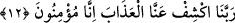

11. (Duman) İnsanları sarar. Bu, acı bir azâbdır.
İşte Allah Teâlâ’nın “(Duman) İnsanları sarar” kavli bunu ifâde etmektedir. Yani o
duman onları kuşatır ve her taraftan onları kaplayıverir. Bu ifâde duhân kelimesinin
sıfatıdır.
Aynı zamanda bu açlık yahut bu duman “…acı bir azâbdır” dediler. Nihâyet Ebû
Süfyân beraberindeki bir toplulukla bir heyet olarak Peygamberimiz’e (s.a.) geldiler.
Peygamberimiz’den Allah ve akrabalık hakkı için talebde bulundular. Ey Muhammed,
Allah hakkı ve akrabalık hürmeti için senden bizim adımıza Allah’a yağmur duâsı
yapmanı istiyoruz, dediler. Şâyed Peygamberimiz duâ edip bu kıtlık belâsının
kalkmasını sağlarsa îman edecekleri sözünü verdiler.
12. “Rabbimiz, bizden azâbı kaldır, çünkü biz artık inanıyoruz” derler.
İşte Allah Teâlâ’nın “Rabbimiz, bizden azâbı” açlık yahut duman azâbını “kaldır”, ki
bunlar sonuçları bakımından aynı şeylerdir. Zîrâ duman açlıktan kaynaklanmaktadır-
“çünkü” azab kaldırıldıktan sonra “biz artık inanacağız, derler.” kavli bunu ifâde
etmektedir.
[198]. Terğîb, II, 326.
[199]. Irâkî, Muğnî, I, 203.
[200]. İbn Arrâk, Tenzîh, I, 92; Leknevî, el-Âsâru’l-merfû’a, s. 60.
[201]. Münâvî, II, 316.
[202]. Kenzü’l-‘ummâl, XII, 315.
[203]. Buhârî, Tevhîd 15; 55; Bed’ü’l-halk 1; Müslim, Tevbe 14-16; İbn Mâce, Zühd
35; Müsned, II, 242, 258, 260, 313, 358, 381, 397, 433, 466.
[204]. İbn Arabî, Fütûhât, III, 348, 549.
[205]. Buhârî, Ezan 128, İstiskà 2, Cihâd 98, Enbiyâ 19; Tefsîr (3), 9, (4), 21; Edeb
110; Müslim, Mesâcid 294, 295; Ebû Dâvûd, Salât 216, Vitr 10; Nesaî, Tatbîk 27; İbn
Mâce, İkàme 145; Müsned, II, 239, 255, 271, 418, 470, 502, 521.